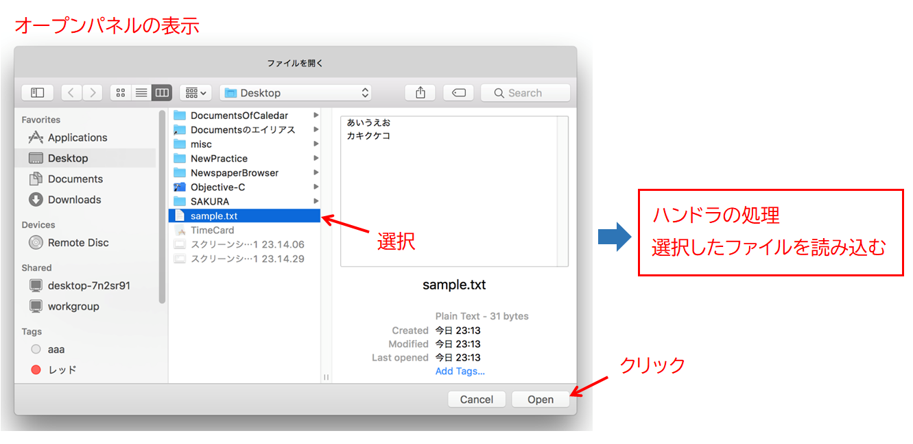
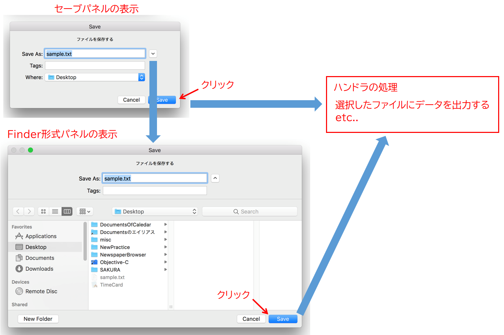
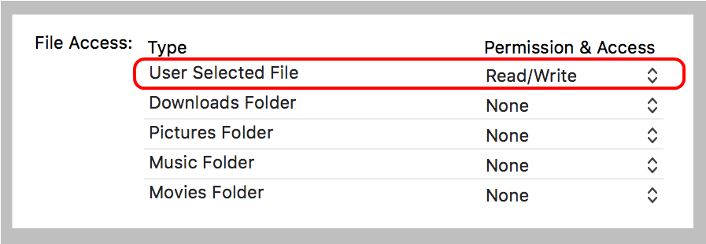

NSOpenPanel / NSSavePanel
NSOpenPanel/NSSavePanelクラスは、ユーザが、Finder形式のディレクトリ一覧から、任意のファイルを選択する機能を提供する。選択したファイル（URLオブジェクト）を利用したアプリケーション処理を組み込みことができる。
選択したファイルの利用法は自由だが、NSOpenPanel はデータの入力のために使用することが多い。一方、NSSavePanel は出力ファイルとして利用することを前提としている。
パネルを閉じた後に起動するハンドラ（Block文）に、ユーザが選択したファイルを使ってデータ入出力等の処理を記述する、というのが典型的な使用方法である。
NSOpenPanel/NSSavePanelクラスは、一連の処理を定型化し、必要な要素をオールインワンに組み込んだものである。
・ Finder likeなディレクトリブラウザ
・ 各種ボタンや入力フィールド、それらを制御するウィンドウオブジェクト
・ 初期値のセッットや、動作や条件を定義する各種プロパティ
・ アプリケーション処理を起動する delegateやハンドラの定義など
NSOpePanelの例
オープンパネルからファイルを選択し、NSStringオブジェクトに読み込む。
主な条件は、ユーザが選択可能なファイルタイプは "txt"、"htm"、"html" のテキストファイルのみ、最初に位置付けるディレクトリはユーザデスクトップ、ファイルの複数選択は不可とする。
パネルはモーダルなフローティング・ウィンドウとして表示する。パネルを閉じた後、規定のハンドラが起動するので、そこにファイルの読み込み等のアプリケーション処理を記述する。

NSSavePanelの例
NSStrongオブジェクトをセーブパネルで指定したファイルに出力する。パネルの表示方法は、オープンパネルと同じようにモーダルなフローティング・ウィンドウとする。
パネルの遷移
最初に表示されるパネルは、初期設定のディレクトリとファイル名を表示する。ファイル名の右の矢印をクリックすると、Finder likeなディレクトリ一覧が表示されので、ディレクトリの移動やファイル名の変更、新規フォルダの作成ができる。
出力先のファイルとして次のいずれかを選ぶことができる。
(1) 既存のファイルを選択する
(2) 既存のディエクトリに新規のファイルを作成する
(3) 新しいディエクトリを作成しそこにファイルを作成する
既存のファイルを選択して実行ボタンをクリックすると、上書き注意のダイアログボックスが表示される。ユーザは処理の続行の適否を応答することができる。これは、ハンドラが起動する前にフレームワークが自動的に行う処理である。

App Sandboxの設定について
App SandoboxをONにした場合は、File AccessのUser Selected Fileを “Read/Write” に設定すること。これは、パネルを通してユーザが指定するファイルは全て読み書き可能であることを意味する。”Read Only” だとOpenPanelのみ動作する。Noneだと、OpenPanel/SavePanelとも動作しない。

App SandoboxをOFFにすれば、ファイルアクセスは自由なのでいずれも動作する。
パネルをモーダルなシートで表示する
パネルの表示メソッドを次のように変えれば、パネルは指定したウィンドウから飛び出すモーダルなシートとなる。